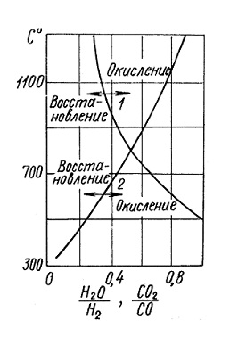

При нагреве стали до высоких температур под действием кислорода и других окислительных газов (СО2, Н2О, SО2), находящихся в атмосфере печи, происходит окисление и, обезуглероживание поверхностных слоев деталей. Окисление и обезуглероживание стальных изделий происходит при нагреве их в пламенных и электрических печах различного типа и в соляных ваннах. Величина окисления и обезуглероживания зависит от вида топлива, конструкции печи, от состава и давления атмосферы печи, температуры, времени нагрева, химического состава стали и других факторов.
В результате всех видов горячего передела стали в прокатных, кузнечных и термических цехах в окалину переходит до 5% вырабатываемой стали. Большие материальные потери при этом заключаются не только в угаре стали, но и в дополнительных затратах на механическую обработку, очистку изделий от окалины гидравлическим способом, дробеструйными аппаратами, щетками и травлением.
В термических цехах при нагреве имеет место ряд поверхностных пороков стали: окисление, обезуглероживание поверхности, различие в твердости при закалке и т. д. При высоких температурах железо окисляют не только чистый кислород и воздух, но водяной пар, и углекислый газ. Окислители по активности своего действия располагаются в следующем порядке: кислород, воздух, водяной пар, углекислый газ. Рабочее пространство в топливных печах заполнено продуктами горения, в которых присутствуют СО2, СО, Н2О, Н2, СnН2n+2, СnН2n, SO2, азот и кислород. В электрических печах рабочее пространство заполнено воздухом, кислород которого и окисляет сталь. Окисление изделий при нагреве в соляных ваннах происходит за счет кислорода воздуха, попадающего в соль вместе с изделиями во время их погружения, а также через зеркало ванны.
Действие указанных выше газов на поверхность изделий во время их нагрева в печах зависит от соотношения СО и СО2, Н2 и Н2О в газовой смеси. Газовая атмосфера печи по отношению к стали может быть восстановительной, окислительной или нейтральной в зависимости от концентрационного отношения Н2 к Н2О или СО к СО2. Равновесные концентрации этих газов определяются константой равновесия реакции водяного газа: СО + Н2О ↔ СО2 + Н2.
Из диаграммы равновесия указанной реакции следует, что газ, в котором отношение СО2/СО равно 0,5, при температуре выше 850° С будет оказывать на железо окислительное, а при температуре ниже 850 °С— восстановительное действие. При температуре 850 °С равновесному состоянию между Н2, Н2О, СО, СО2 и железом соответствует отношение Н2О/Н2 = 0,55. При таком отношении и температуре ниже 850 °С газ будет оказывать на железо окислительное, а при температуре выше 850 °С — восстановительное действие.
Состоянию равновесия при высокой температуре (1200 °С) соответствует отношение СО2/СО = 0,33, а Н2О/Н2 = 0,80. Последние два отношения характеризуют условия, безокислительного нагрева открытым пламенем и позволяют определить условия сжигания топлива.
Одновременно с окислением железа происходит окисление углерода в поверхностном слое, т.е. обезуглероживание. Степень обезуглероживания зависит от тех же факторов, что и окисление, т.е. вида и способа сжигания топлива, химического состава стали, температуры и времени нагрева. Кроме обезуглероживания за счет кислорода, обезуглероживание может происходить также и за счет водорода вследствие образования углеводородов. При сжигании топлива с недостатком воздуха в продуктах горения появляется водород, который в присутствии водяного пара является самым сильным обезуглероживающим газом. В слабоокислительной атмосфере обезуглероживание обнаруживается при нагреве до более низких температур, чем в сильноокислительной. Таким образом, обезуглероживание тем больше, чем меньше окислительных компонентов в атмосфере печи. Действие температуры на обезуглероживание может быть различным, в зависимости от сорта стали, так как с изменением температуры одновременно изменяется интенсивность окисления и скорость диффузии углерода.